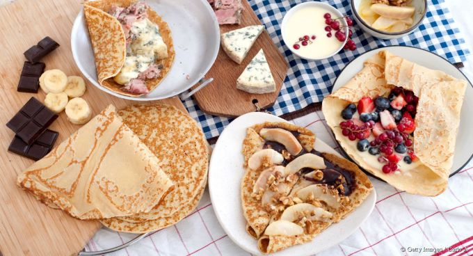
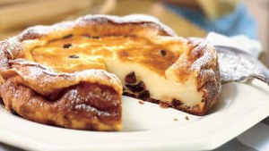
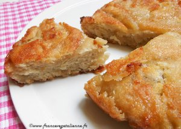
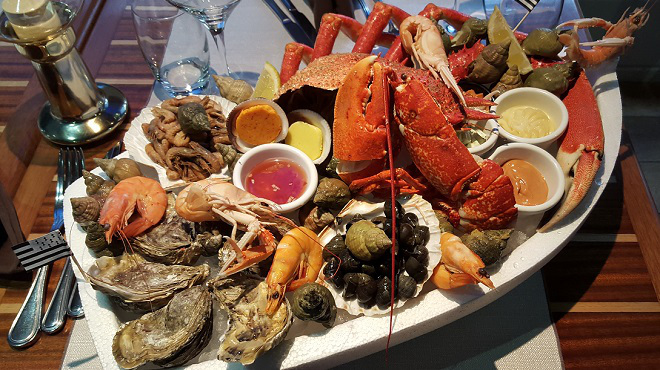
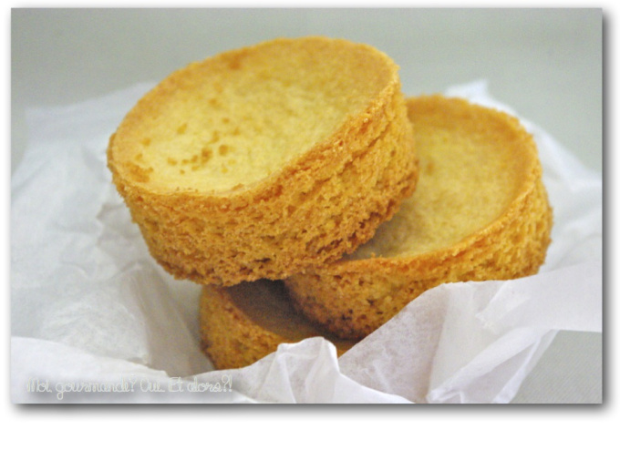

Gastronomie
Une cuisine reconnue dans le monde entier!
Elles sont la chose la plus connue en Bretagne, et dans le monde. Les crêpes de froment se mangent sucrées et les galettes de blé noir en version salées ! Il faut être une personne d'expérience pour pouvoir prétendre manier la "galetière" pour réaliser ces crêpes fines et savoureuses.
Un autre dessert a su conquérir par son moelleux. Le far breton était auparavant cuit directement dans le four du boulanger avant que la recette ne se démocratise. Le far est sans doute un des plus vieux desserts de Bretagne. Pouvant se faire avec des pruneaux ou des pommes ou même nature, il continue toujours autant à nous régaler.
Vous avez soif ? Le cidre est une boisson alcoolisée titrant généralement entre 2 % vol. et 8 % vol. d'alcool, obtenue à partir de la fermentation du jus de pomme. Goûteux et pétillant, le cidre est une boisson de choix pour accompagner vos plats.
Un dessert des plus fondant
On parle bien évidemment du "kouign-amann" (qui veut dire littéralement gâteau au beurre) qui est composé de beurre, de beurre et toujours plus de beurre. Il suffit de rajouter un peu de sucre et de farine pour compléter la recette. En le réchauffant légèrement il est en même temps croustillant et moelleux, un vrai délice pour les papilles.
La mer s'invite dans vos assiettes
Les plateaux de fruits de mer sont une spécialité de la Bretagne. Homard, langoustine, araignée de mer, crabe et autres mets mettent l'eau à la bouche. Avec ou sans eux, les huîtres sont le fleuron de la gastronomie. Il y en a pour tous les goûts, si on les aime iodées ou avec un léger gout de noisette vous finirez par trouver votre bonheur.
Les palets bretons
Les palets bretons un centimètre et demi d'épaisseur, un goût de beurre qui ne se cache pas, et un biscuit qui ne trouve pas de rival quand il s'agit d'accompagner un café... Ces petits biscuits au beurre sont largement connus en Bretagne.
